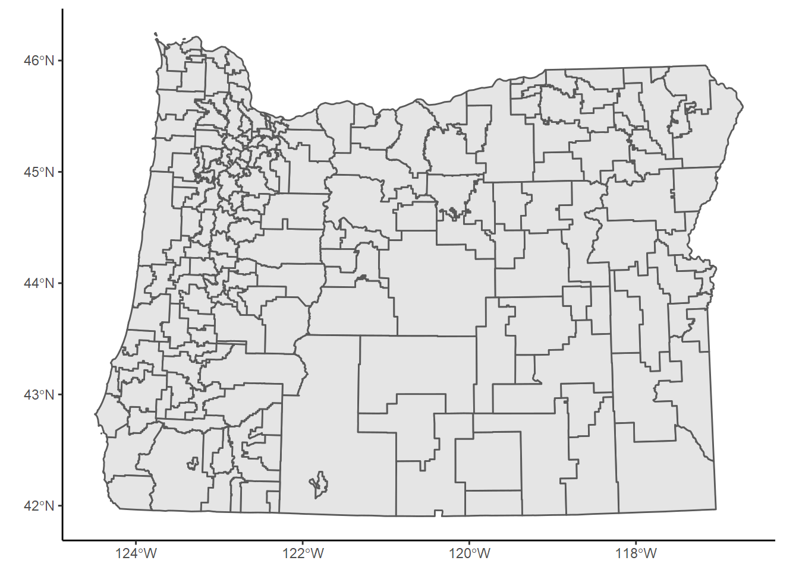
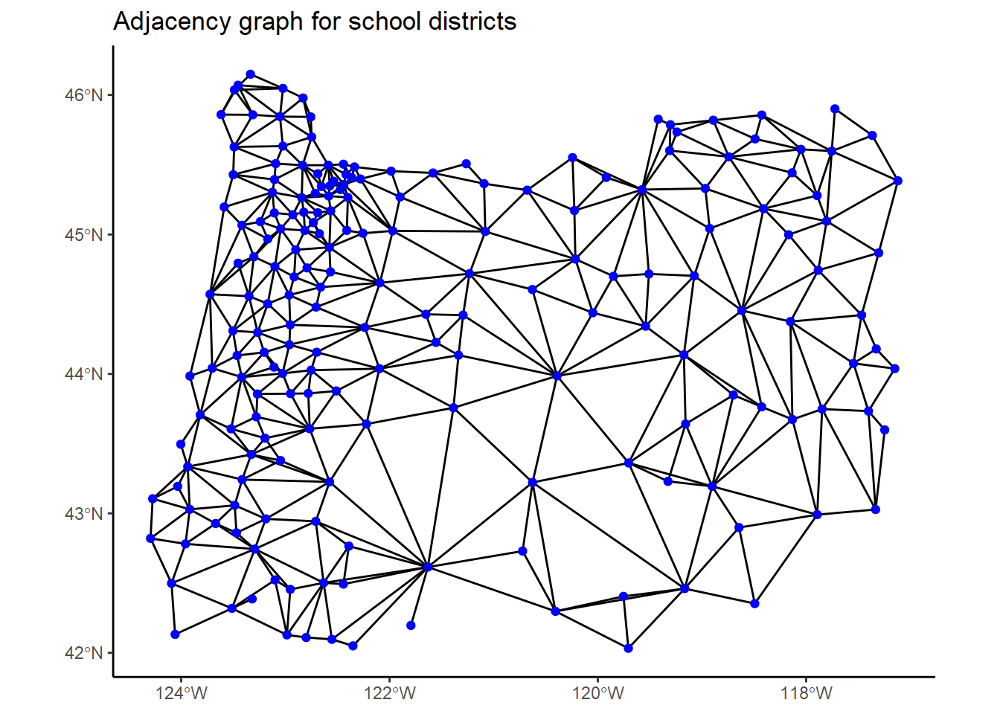
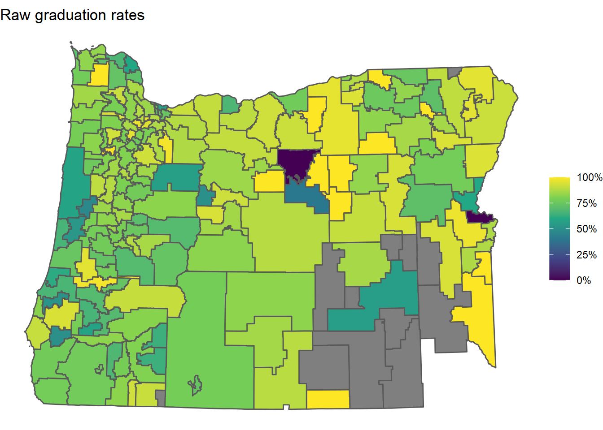
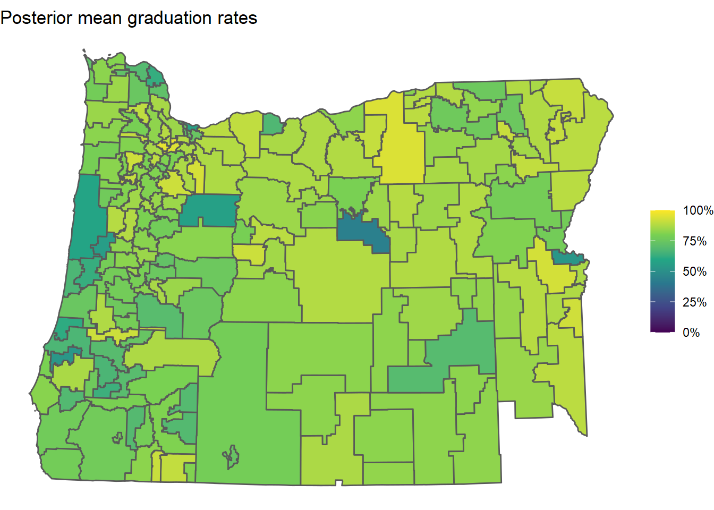
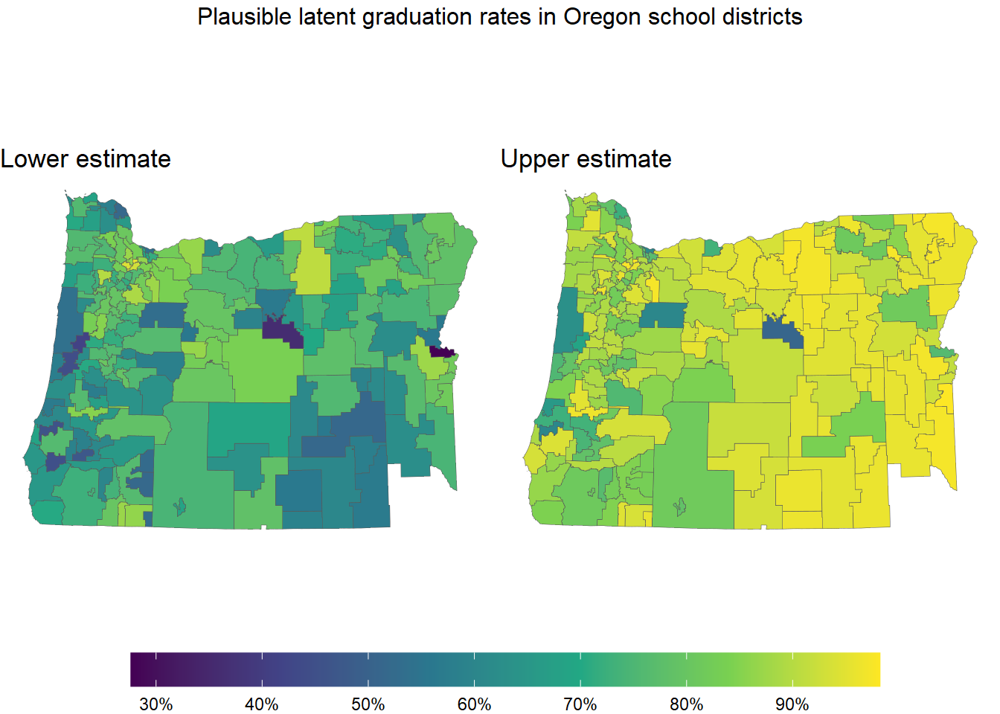
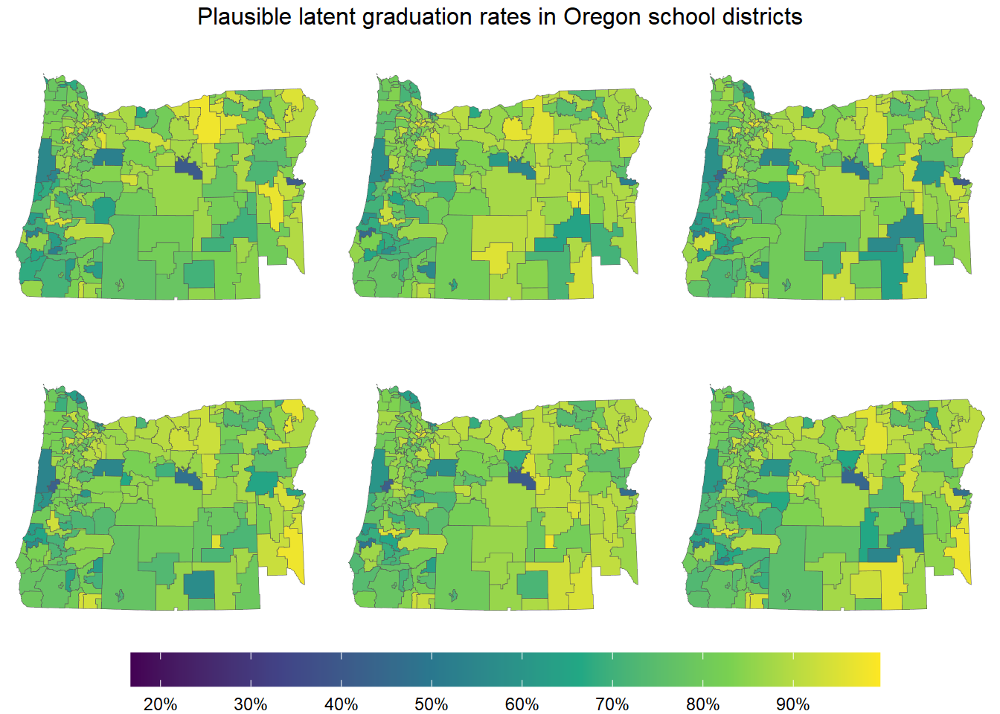
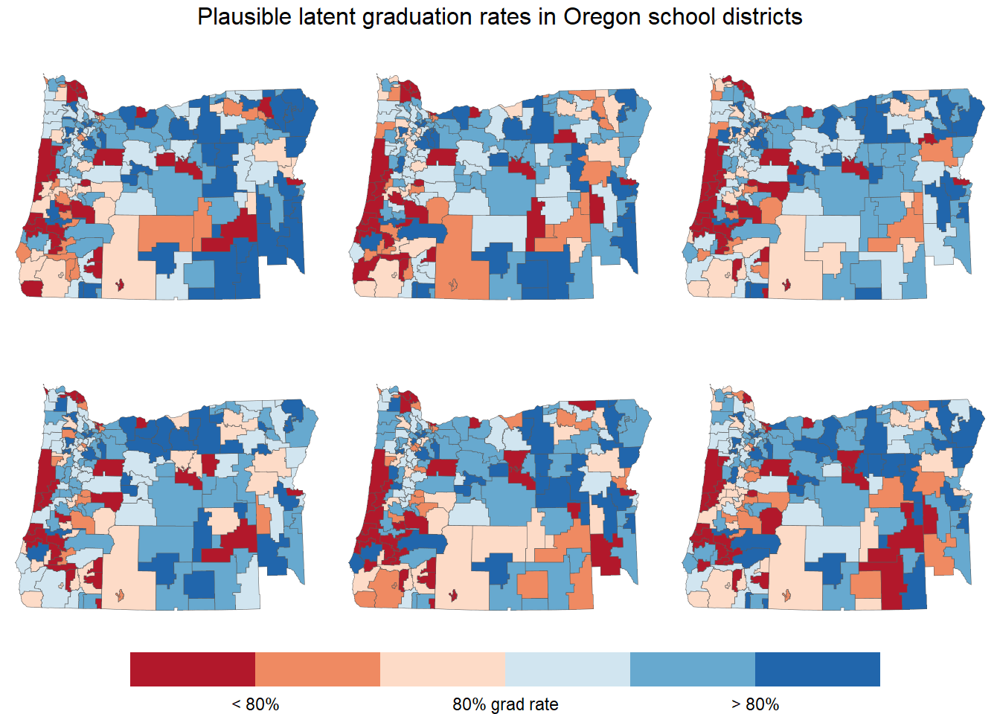
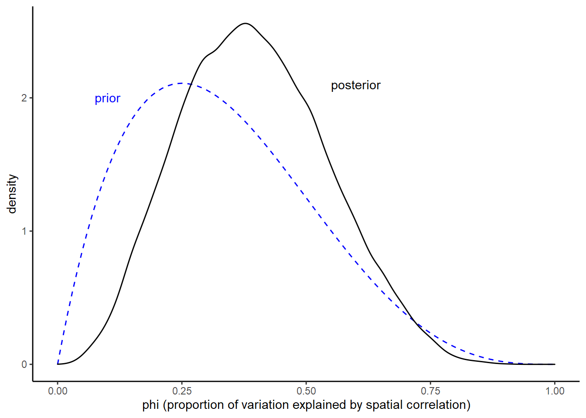
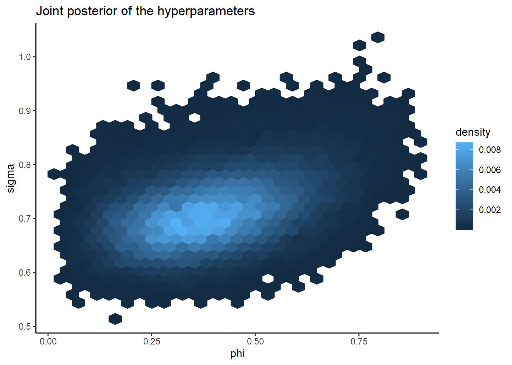

Since school districts in Oregon cover geographic areas, I wondered whether their performance metrics have any spatial correlation. Do school districts near each other tend to have similar graduation rates, for instance?
Surely there is more to a school’s performance than its location. There are, unfortunately, going to be districts right next to each other that have very different metrics. If we were to fit a model that just did some spatial smoothing of the data, it would never expect that sort of thing. So, we want a model that also allows for non-spatial variation.
We’ll analyze Oregon school district graduation rates using a model called the Besag-York-Mollié (BYM) model that measures both spatial and non-spatial variation. We will use this model to estimate the ‘latent’ graduation rate for each district - a theoretical measure of that district’s performance that is hopefully less sensitive to the individual students in the graduating cohort and more predictive of future graduation rates.
One interesting side-effect of the analysis is that we will obtain graduation rate predictions for school districts that didn’t have any students this past year. Since the model includes spatial correlation, these missing districts will get slightly different predictions depending on the graduation rates of their non-missing neighboring districts.
# data processing
library(dplyr)
library(stringr)
library(openxlsx)
# plotting
library(ggplot2)
library(scales)
library(ggpubr)
# processing spatial data
library(sf)
# spatial analysis
library(spdep)
library(INLA)
library(cmdstanr)
library(posterior)
# for retrieving district geometry
library(tidycensus)
# ggplot2 theme
theme_set(theme_classic())
options(tigris_use_cache = TRUE)We will retrieve the district geometry using tidycensus and the graduation rates from the Oregon Department of Education’s website.
First we use tidycensus::get_acs() to get school district boundaries. The geometries are separated into two different types, unified and elementary, which we fetch separately then bind together.
geogs <- c("school district (unified)", "school district (elementary)")
.retrieved_geometries <- lapply(
geogs,
get_acs,
variables = c(total = "DP02_0058"), # not used in the analysis
state = 41, # Oregon
year = 2020,
moe_level = 95,
survey = "acs5",
geometry = TRUE
)
or <-
do.call(rbind, .retrieved_geometries) %>% # bind "unified" and "elementary" districts
filter(
NAME != "Remainder of Oregon, Oregon",
NAME != "School District Not Defined, Oregon"
) %>%
mutate( # Clean up district names to match NCES names
NAME =
NAME %>%
str_remove(" \\(.*\\)") %>%
str_remove(", Oregon")
) %>%
st_transform(2992) %>% # use Oregon Lambert projection
select(-c(variable, estimate, moe))
glimpse(or)## Rows: 196
## Columns: 3
## $ GEOID <chr> "4101120", "4101200", "4106740", "4100023", "4104740", "41129~
## $ NAME <chr> "Greater Albany School District 8J", "Alsea School District 7~
## $ geometry <MULTIPOLYGON [ft]> MULTIPOLYGON (((601230.6 10..., MULTIPOLYGON ((~A quick plot of the districts:
or %>%
ggplot() +
geom_sf()
Next we’ll download ODE’s graduation data and join it to the geometry above. We’ll also need a key I made a while back that matches the district names ODE uses with the names used by the district geometries above.
# NCES district names matched with ODE district names
download.file(
"https://szego.github.io/districts_homelessness/nces_and_ode_sd_names.csv",
"nces_and_ode_sd_names.csv",
mode = "wb"
)
# Oregon graduation report 2020-2021
download.file(
"https://www.oregon.gov/ode/reports-and-data/students/Documents/cohortmediafile2020-2021.xlsx",
"cohortmediafile2020-2021.xlsx",
mode = "wb"
)Here we read and process the downloaded files then join them to the district geometries.
ode_sd_name_key <- read.csv("nces_and_ode_sd_names.csv")
grad <-
read.xlsx(
"cohortmediafile2020-2021.xlsx",
sheet = "4YR District and School",
na.strings = c("*", "—")
) %>%
filter(
Student.Group.Code == "Tot", # 'all students' group
Institution.Level == "District", # district level grad rates
District.Name != "ODE YCEP District"
) %>%
select( # pick out necessary columns
district = District.Name,
cohort = Adjusted.Cohort,
grads = Graduates,
grad_rate = `2020-21.Four-year.Cohort.Graduation.Rate`
) %>%
mutate_at(vars(cohort, grads), as.integer) %>%
mutate(
grad_rate = round(as.numeric(grad_rate), 2),
grad_rate = if_else( # fix some missing values
is.na(grad_rate) & cohort > 0,
grads/cohort,
grad_rate
)
) %>%
left_join(ode_sd_name_key, by = c("district" = "ODE")) %>%
select(NCES, cohort, grads, grad_rate)
or_grad <-
or %>%
left_join(grad, by = c("NAME" = "NCES")) %>%
filter(NAME != "McDermitt School District 51") %>%
mutate(idarea = row_number()) # create a district id column
or_gradThis analysis is essentially the same as the one in Chapter 5 of Paula Moraga’s book Geospatial Health Data.
The first step in the analysis is to take the school district areas and catalog which districts are adjacent to which others. This can be done programmatically using the district geometries we fetched using tidycensus.
The function spdep::poly2nb() takes a set of geographic polygons (our school districts) and returns a list of lists enumerating which polygons are adjacent. We can then use INLA::inla.read.graph() to convert that result into a format INLA::inla() will understand.
nbhds <- poly2nb(or_grad)
nb2INLA("districts.adj", nbhds)
graph <- inla.read.graph(filename = "districts.adj")Let’s plot a visual representation of the adjacency network we just constructed by drawing lines between centroids of adjacent school districts.
.or_centroids <- st_centroid(or_grad)
# get coordinates of centroids
.coordinates <-
.or_centroids %>%
as_tibble() %>%
pull(geometry)
.line_segments <- lapply( # there is probably a clearer way to do this
1:length(nbhds),
function(i) {
x <- nbhds[[i]]
x <- x[x > i] # prevents duplicate lines
lapply(x, function(j) st_linestring(c(.coordinates[[i]], .coordinates[[j]])))
}
)
.edges <- st_sf(
tibble(geometry = st_sfc(do.call(c, .line_segments))),
crs = st_crs(.or_centroids)
)
ggplot() +
geom_sf(data = .edges, color = "black") +
geom_sf(data = .or_centroids, color = "blue") +
ggtitle("Adjacency graph for school districts")
In this graph, each blue dot represents a district, and two dots are connected if the districts are adjacent.
The main idea of the analysis is that we want to estimate each district’s latent graduation rate incorporating any detected correlation with neighboring districts in this network.
We’ll fit a BYM2 model to the data using INLA. The BYM2 model is a reparameterization of the usual BYM model that has a nicer posterior geometry and easily-interpretable coefficients. See the next section for more on the theory behind this model.
We’ll tweak the priors used by Moraga a bit:
prior <- list(
prec = list(
prior = "pc.prec",
param = c(1/0.31, 0.01)
),
phi = list(
prior = "pc",
param = c(0.5, 2/3)
)
)
fit_inla <- inla(
grads ~ f(idarea, model = "bym2", graph = graph, hyper = prior),
Ntrials = or_grad$cohort,
family = "binomial",
data = or_grad,
control.predictor = list(compute = TRUE, link = 1),
control.compute = list(config = TRUE)
)
summary(fit_inla)##
## Call:
## c("inla.core(formula = formula, family = family, contrasts = contrasts,
## ", " data = data, quantiles = quantiles, E = E, offset = offset, ", "
## scale = scale, weights = weights, Ntrials = Ntrials, strata = strata,
## ", " lp.scale = lp.scale, link.covariates = link.covariates, verbose =
## verbose, ", " lincomb = lincomb, selection = selection, control.compute
## = control.compute, ", " control.predictor = control.predictor,
## control.family = control.family, ", " control.inla = control.inla,
## control.fixed = control.fixed, ", " control.mode = control.mode,
## control.expert = control.expert, ", " control.hazard = control.hazard,
## control.lincomb = control.lincomb, ", " control.update =
## control.update, control.lp.scale = control.lp.scale, ", "
## control.pardiso = control.pardiso, only.hyperparam = only.hyperparam,
## ", " inla.call = inla.call, inla.arg = inla.arg, num.threads =
## num.threads, ", " blas.num.threads = blas.num.threads, keep = keep,
## working.directory = working.directory, ", " silent = silent, inla.mode
## = inla.mode, safe = FALSE, debug = debug, ", " .parent.frame =
## .parent.frame)")
## Time used:
## Pre = 11.1, Running = 1.08, Post = 0.335, Total = 12.5
## Fixed effects:
## mean sd 0.025quant 0.5quant 0.975quant mode kld
## (Intercept) 1.606 0.054 1.501 1.606 1.713 1.605 0
##
## Random effects:
## Name Model
## idarea BYM2 model
##
## Model hyperparameters:
## mean sd 0.025quant 0.5quant 0.975quant mode
## Precision for idarea 2.041 0.349 1.440 2.012 2.809 1.955
## Phi for idarea 0.415 0.181 0.106 0.404 0.777 0.366
##
## Marginal log-Likelihood: -540.91
## is computed
## Posterior summaries for the linear predictor and the fitted values are computed
## (Posterior marginals needs also 'control.compute=list(return.marginals.predictor=TRUE)')In the BYM2 model, the hyperparameter phi measures the proportion of the variance that can be attributed to spatial correlation. The model estimates that spatial correlation accounts for between 11% and 78% of the variance in the graduation rates.
First, here’s a map of the raw 2018-2019 graduation rates from ODE’s data:
or_grad %>%
mutate(grad_rate = grad_rate/100) %>%
ggplot() +
geom_sf(aes(fill = grad_rate)) +
scale_fill_viridis_c(labels = percent) +
theme_void() +
labs(fill = NULL) +
ggtitle("Raw graduation rates")
Note that some of the districts are missing (gray). These districts ended up having no students in their 2019-2020 “four-year cohorts”. A four-year cohort is a group of students who entered together as freshmen - ODE uses these to calculate graduation rates. A cohort may end up being empty at the end of the four years because students transfer out to other districts or pass away.
Again, the goal of the analysis is to estimate the latent graduation rates of all of the districts, including these districts that essentially had no students. This is something we can get from the model.
Indeed, here is a plot of the posterior mean estimates of the latent graduation rates obtained from the model:
or_grad_inla_posterior <-
fit_inla$summary.fitted.values %>%
select(mean, lower = `0.025quant`, upper = `0.975quant`) %>%
bind_cols(or_grad, .)
or_grad_inla_posterior %>%
ggplot() +
geom_sf(aes(fill = mean)) +
scale_fill_viridis_c(limits = c(0, 1), labels = percent) +
theme_void() +
labs(fill = NULL) +
ggtitle("Posterior mean graduation rates")
Clearly a lot of shrinkage (smoothing) occurred, which is a good thing. Districts with few students don’t have a lot of data available and their raw graduation rates will generally be super noisy and sensitive to their specific students that year. This model is an attempt to account for that.
What’s more useful than just getting posterior means is that we get measures of the uncertainty around these inferred graduation rates. Here’s a plot showing the lower and upper ends of each district’s 95% posterior density interval:
.plot_skeleton <-
or_grad_inla_posterior %>%
ggplot() +
scale_fill_viridis_c(
limits = c(
min(or_grad_inla_posterior$lower),
max(or_grad_inla_posterior$upper)
),
breaks = (0:10)/10,
labels = percent
) +
labs(fill = NULL) +
theme_void() +
theme(legend.key.width = unit(0.15, "npc"))
gg_l <-
.plot_skeleton +
geom_sf(aes(fill = lower), size = 0.1) +
ggtitle("Lower estimate")
gg_u <-
.plot_skeleton +
geom_sf(aes(fill = upper), size = 0.1) +
ggtitle("Upper estimate")
ggarrange(
gg_l, gg_u,
legend = "bottom",
common.legend = TRUE
) %>%
annotate_figure("Plausible latent graduation rates in Oregon school districts")
There are lots of other interesting things we can get from this model, especially if we sample from the posterior.
inla_draws <-
inla.posterior.sample(1e3, fit_inla) %>%
purrr::map_dfr(
~ bind_cols(
as_tibble(t(.x$hyperpar)),
as_tibble(t(.x$latent[,1]))
)
) %>%
select(-starts_with("idarea"))Posterior samples are much more flexible than just posterior means and uncertainty intervals. For example, we can now sample entire maps.
n_maps <- 6
.grad_rate_draws <-
inla_draws %>%
select(starts_with("predictor")) %>%
mutate(across(everything(), plogis))
.plot_skeleton <-
ggplot() +
scale_fill_viridis_c(
limits = c(min(.grad_rate_draws), max(.grad_rate_draws)),
breaks = (0:10)/10,
labels = percent
) +
labs(fill = NULL) +
theme_void() +
theme(legend.key.width = unit(0.15, "npc"))
.maps <- replicate(
n_maps,
{
or_grad_sample <-
or_grad %>%
mutate(
estimate =
.grad_rate_draws %>%
sample_n(1) %>%
as.numeric()
)
.plot_skeleton +
geom_sf(data = or_grad_sample, aes(fill = estimate), size = 0.1)
},
simplify = FALSE
)
do.call(ggarrange, c(.maps, legend = "bottom", common.legend = TRUE)) %>%
annotate_figure("Plausible latent graduation rates in Oregon school districts")
This plot shows six maps, each drawn from the posterior of our model. In a sense, the model perceives each of these maps as a plausible map of the latent graduation rates.
Picking out spatial trends is a bit tricky using a continuous color scale, so let’s use a discrete color scale instead. We’ll sort the graduation rates into six bins, with three bins below 80% and three above 80%.
.posterior_grad_rate_quantiles <-
.grad_rate_draws %>%
unlist() %>%
quantile((1:5)/6)
# calculate nice breaks by mapping quantiles
# to nearby points centered at 0.8
.x <- .posterior_grad_rate_quantiles[c(1, 3, 5)] # starting points
.b <- .x
.b[2] <- 0.8 # target
.a <- solve(matrix(c(1, 1, 1, .x, .x^2), nrow = 3), .b) # map coefficients
.adjust_breaks <- function(x) sum(.a * c(1, x, x^2)) # quadratic map
.breaks <- sapply(.posterior_grad_rate_quantiles, .adjust_breaks)
.plot_skeleton <-
ggplot() +
labs(fill = NULL) +
theme_void() +
theme(legend.key.width = unit(0.15, "npc")) +
scale_fill_fermenter(
type = "div",
palette = "RdBu",
direction = 1,
breaks = .breaks - 0.8,
labels = c("< 80%", "", "80% grad rate", "", "> 80%")
)
.maps <- replicate(
n_maps,
{
or_grad_sample <-
or_grad %>%
mutate(
estimate =
.grad_rate_draws %>%
sample_n(1) %>%
as.numeric(),
estimate = estimate - 0.8
)
.plot_skeleton +
geom_sf(data = or_grad_sample, aes(fill = estimate), size = 0.1)
},
simplify = FALSE
)
do.call(ggarrange, c(.maps, legend = "bottom", common.legend = TRUE)) %>%
annotate_figure("Plausible latent graduation rates in Oregon school districts")
Now it’s much easier to pick out red areas and blue areas.
Visually inspecting multiple maps sampled from the posterior allows us to test our mental model of the data. Features that stand out in multiple sampled maps may reflect real patterns in the data.
For anyone looking to learn more about the BYM model and other autoregressive spatial models, Mitzi Morris has an incredible writeup which was later expanded into an article in the journal Spatial and Spatio-temporal Epidemiology. I strongly suggest reading those since I’ll just give the briefest overview here.
The BYM model has a linear predictor of the form
\[ \psi = x\beta + \theta + \xi, \]
where \(x\beta\) are the fixed effects, \(\theta\) is an ordinary random-effects component with
\[ \theta \sim \operatorname{Normal}(0, \sigma_\theta), \]
and \(\xi\) is a special random-effects component called an ‘ICAR component’ that measures spatial variation. The distribution of this ICAR component can be written as
\[ p(\xi) \propto \exp\!\left[-\frac{1}{2} \sum_{i \sim j} (\xi_i - \xi_j)^2\right], \\ \sum_i \xi_i = 0, \]
where \(i \sim j\) means that node \(i\) and node \(j\) are spatially adjacent (touching).
The posterior geometry for the BYM model is not particularly nice (making it hard to analyze) and the complicated nature of \(\xi\) makes it difficult to specify an intuitive prior for \(\sigma_\theta\), the scale of \(\theta\). An alternative parameterization of the BYM model, called the BYM2 model, was introduced by Riebler et al. in 2016 to solve these issues.
The linear predictor of the BYM2 model has the form
\[ \psi = x\beta + \nu, \]
where \(x\beta\) is again the term for the fixed effects but \(\nu\) is a particular convolution of the iid random-effects component and the ICAR component:
\[ \nu = \sigma \left( \sqrt{1 - \phi}\,\theta + \sqrt{\phi}\,\xi^* \right), \\ \\ \theta \sim \operatorname{Normal}(0, 1), \qquad \xi^* = c \xi. \]
This is essentially a weighted sum of the two random-effects components. Here, \(\xi\) has the same ICAR distribution as above, but \(c\) is a new scale factor that makes \(\operatorname{Var}(\xi^*) = 1\). This parameterization leads to relatively intuitive interpretations of the remaining parameters \(\phi\) and \(\sigma\):
The scale factor \(c\) is computed directly from the adjacency graph of the data.
One especially nice thing about this parameterization is that it decouples the variance for \(\theta\) from the variance for \(\xi\), leading to a much simpler posterior geometry. It’s also much easier to come up with sensible priors for \(\phi\) and \(\sigma\).
Here’s our Stan code for the BYM2 model. This is largely identical to Mitzi Morris’ code.
functions {
real icar_normal_lpdf(vector phi, int N, int[] node1, int[] node2) {
return -0.5 * dot_self(phi[node1] - phi[node2])
+ normal_lpdf(sum(phi) | 0, 0.001 * N); // soft sum-to-zero constraint
}
}
data {
int<lower=1> N_areas; // number of districts
int<lower=1, upper=N_areas> N_data; // number of districts with data
int<lower=1> cohort[N_data]; // number of students
int<lower=0> grads[N_data]; // number of graduates
int<lower=1, upper=N_areas> id[N_data]; // district id
int<lower=1> N_edges; // # of edges in adjacency graph
int<lower=1, upper=N_areas> node1[N_edges]; // node1[i], node2[i] are districts
int<lower=1, upper=N_areas> node2[N_edges]; // and node1[i] < node2[i]
real<lower=0> scaling_factor;
}
parameters {
real Intercept;
vector[N_areas] spatial; // spatial effects
vector[N_areas] hetero; // heterogeneous effects
real<lower=0, upper=1> phi; // proportion of variance from spatial effects
real<lower=0> sigma; // scale of convolved effects
}
transformed parameters {
// varying intercept (convolution of spatial & heterogeneous effects)
vector[N_areas] convolved_re;
convolved_re = (sqrt(phi/scaling_factor)*spatial + sqrt(1-phi)*hetero)*sigma;
}
model {
// linear model
vector[N_data] mu = Intercept + convolved_re[id];
// priors for random effects
spatial ~ icar_normal(N_areas, node1, node2);
hetero ~ std_normal();
phi ~ beta(2, 4);
sigma ~ exponential(1);
// priors for linear model
Intercept ~ student_t(3, 1, 5);
// likelihood
grads ~ binomial_logit(cohort, mu);
}
generated quantities {
// posterior latent graduation rates
vector[N_areas] grad_rate = inv_logit(Intercept + convolved_re);
}Note that our priors for \(\phi\) and \(\sigma\) are
\[ \phi \sim \operatorname{Beta}(2, 4) \qquad \text{and} \qquad \sigma \sim \operatorname{Exponential}(1). \]
The last thing we need to do is compute the scaling factor for the ICAR component. We’ll rely on some functions from the INLA package for this. The code chunk below essentially computes adjacency matrix for our school districts, replaces its diagonal with neighbor counts, then finds a generalized inverse of that matrix satisfying a certain sum-to-zero constraint.
The idea behind this computation is that the matrix Q_inv is actually the variance matrix of the ICAR component of the model. We then take the geometric mean of its diagonal as the scaling factor we need to make \(\operatorname{Var}(\xi^*) = 1\).
Q <- -inla.graph2matrix(graph)
diag(Q) <- graph$nnbs # replace diagonal with neighbor counts
n <- dim(Q)[1] # number of nodes
Q_inv <- inla.qinv(
Q + Diagonal(n)*max(diag(Q))*sqrt(.Machine$double.eps), # add perturbation
constr = list(A = matrix(rep(1, n), nrow = 1), e = 0)
)
scaling_factor <- exp(mean(log(diag(Q_inv)))) # geometric mean of diag(Q^-1)Oh, one more thing. We need lists of which school districts are adjacent to which others.
node1 <-
lapply(1:length(nbhds), function(i) rep(i, sum(nbhds[[i]] > i))) %>%
unlist()
node2 <-
lapply(
1:length(nbhds),
function(i) {
i_neighbors <- nbhds[[i]]
return(i_neighbors[i_neighbors > i])
}
) %>%
unlist()
cbind(node1, node2)[1:10,]## node1 node2
## [1,] 1 9
## [2,] 1 11
## [3,] 1 90
## [4,] 1 107
## [5,] 1 108
## [6,] 1 184
## [7,] 2 11
## [8,] 2 35
## [9,] 2 80
## [10,] 2 81For example, this says that district 1 in the data is adjacent to districts 9, 11, 90, 107, 108, and 184.
Finally we compile and fit the model.
spatial_model <- cmdstan_model("spatial_binomial.stan")
or_grad_complete <-
or_grad %>%
filter(cohort > 0)
fit_stan <- spatial_model$sample(
data = list(
N_areas = nrow(or_grad),
N_data = nrow(or_grad_complete),
N_edges = length(node1),
cohort = or_grad_complete$cohort,
grads = or_grad_complete$grads,
id = or_grad_complete$idarea,
node1 = node1,
node2 = node2,
scaling_factor = scaling_factor
),
iter_warmup = 1e3,
iter_sampling = 1e4,
chains = 4,
parallel_chains = 4
)Let’s take a look at the summary for a few parameters.
fit_stan$summary(c("Intercept", "phi", "sigma")) %>%
mutate_if(is.numeric, round, 2)Our estimate for phi is different from INLA’s estimate, but that’s to be expected since we used a different prior for it. The INLA model uses a ‘complexity penalizing’ prior, while we just used a Beta.
Before we get to the graduation rate estimates from the Stan model, I want to point out that the Stan model samples the posterior of phi very well. If you try to make the graph below using the posterior samples from the INLA model, you’ll see that those samples are only taken at widely-spaced discrete points within the interval. The Stan model, on the other hand, gives us a full picture:
stan_draws <-
fit_stan$draws() %>%
as_draws_df() %>%
merge_chains()
stan_draws %>%
ggplot(aes(phi)) +
geom_function(
fun = function(x) dbeta(x, shape1 = 2, shape2 = 4),
linetype = "dashed",
color = "blue"
) +
geom_density() +
geom_text(
aes(x = x, y = y, label = label),
color = c("blue", "black"),
data = tribble(
~x, ~y, ~label,
#----------------
0.1, 2, "prior",
0.6, 2.1, "posterior"
)
) +
labs(x = "phi (proportion of variation explained by spatial correlation)", y = "density") +
expand_limits(x = c(0, 1))
We can even plot the joint posterior of phi and sigma.
stan_draws %>%
ggplot() +
geom_hex(aes(x = phi, y = sigma, fill = ..density.., color = ..density..)) +
ggtitle("Joint posterior of the hyperparameters")
See how nice their posterior geometry is? It’s unimodal and pretty much radially symmetric. The fact that this geometry is so easy to sample from (or otherwise approximate) is a huge advantage of the BYM2 parameterization.
Ok, on to the posterior graduation rates. Below we join them to the district geometries. If we wanted, we could map them just like the INLA estimates.
or_grad_stan_posterior <-
stan_draws %>%
select(starts_with("grad_rate"), .chain, .iteration, .draw) %>%
summarise_draws(
mean = mean,
~quantile(.x, probs = c(0.025, 0.975))
) %>%
rename(lower = `2.5%`, upper = `97.5%`) %>%
bind_cols(
or_grad %>%
select(NAME, cohort, grads, grad_rate),
.
) %>%
select(NAME, cohort, grads, grad_rate, mean, lower, upper)
or_grad_stan_posterior %>%
as_tibble() %>%
select(-geometry) %>%
mutate(across(c(mean, lower, upper), ~round(100*., 2))) %>%
arrange(NAME)For now, I’ll just join the INLA estiamtes and the Stan estimates for comparison.
bind_cols(
or_grad_inla_posterior %>%
as_tibble() %>%
select(NAME, grad_rate, cohort, grads, inla_estimate = mean),
or_grad_stan_posterior %>%
as_tibble() %>%
select(stan_estimate = mean)
) %>%
mutate(across(c(inla_estimate, stan_estimate), ~round(100*., 2))) %>%
select(NAME, inla_estimate, stan_estimate, grad_rate, cohort, grads) %>%
arrange(NAME)On the whole, the INLA and Stan estimates are very similar, as expected.
The main point of fitting the Stan model was to better understand the BYM2 model. Typically I would use INLA for this type of problem since it’s so fast. That said, knowing that I can implement it in Stan if I need some additional flexibility beyond what INLA can offer is comforting. Getting a fuller picture of the posterior for phi is nice too.
27 March 2022